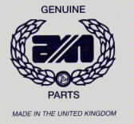
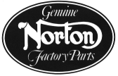

We stock a complete line of Norton Commando parts and an ever expanding line of Atlas
parts.
The majority of our Norton parts are Genuine Norton factory
parts made in the United Kingdom and distributed by:
Andover Norton International LTD.
3, Old Farm Buildings
Standen Manor Estate
Hungerford, Berks RG17 0RB
The Norton parts we carry that are not available through Andover are of the highest quality. We try to test all of our non-factory parts on our street bikes or on our race bikes.
We currently are providing you with two methods of looking up your Norton parts.
The first method is by the Norton Factory Parts Manuals. Select the manual that you are using, then select the group from your manual and the parts are listed in the same order as in your manual. This method will not list the alternative parts that are available such as Stainless Steel, High Performance, Used and Economy replacement parts. If there are alternative parts available for the listed factory part you will see a Yes in the Alt column. If you follow this link, the alternative parts will be listed. If a listed part is not available or you are looking for something that is not listed on the Manual Page, the link at the bottom of the Manual Page will take you to the Old Britts groups that do contain replacement parts and other special performance parts associated with this Manual Page. All the following manuals are in stock along with other books and manuals, see Norton Manuals & Books
The other method is by our Old Britts inventory groupings, which are somewhat similar to the Norton Factory Parts Manual groups.
| 1966 - 1968 Pre-Commando | Parts Manual (81-300022) covering the 1966 through 1968 - 650SS, Atlas, N15CS, P11, P11A, G15CS, G15CSR, G15 MARK II, Publication No. 06-8202 |
| 1969 and 1970 Commando | Parts Manual (81-300018) covering the 1969 and 1970 750 Commando, Publication No. 06-3065 |
| 1971 Commando | Parts Manual (81-300019) covering the 1971 750 Commando, Publication No. 101/71 or 06-8200 |
| 1972 Commando | Parts Manual (81-300021) covering the 1972 750 Commando, Publication No. 06-3402 |
| 1973-1974 Commando | Parts Manual (81-300002) covering the 1973 750 Commando and the 1973-1974 850 Commando, Publication No. 06-5034 |
| 1975 MKIII Commando | Parts Manual (81-300003) covering the 1975 850 Electric Start Commando, Publication No. 00-5756 |
| Old Britts Groups | Parts listed by the Old Britts groups. |
We are planning to have a part number lookup screen so if you know the part number, you can directly access the desired part. This will take a while, but for now the above look up methods should be helpful. Please bear with us. Like Pa Norton, we will keep striving for perfection.
We also stock a complete line of factory manuals, after market manuals and Norton Books
This page was written and designed by F. H. Eaton & Associates if you have any questions or comments please contact us at eaton@oldbritts.com.